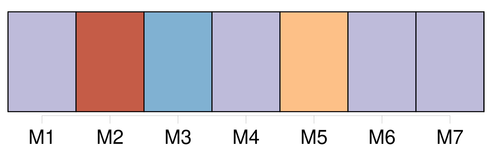
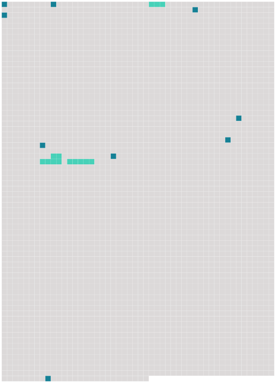

Longueur nb maillons : 13 mentions |
  |
[Filippo] , frère de Marianina, tenait, comme [sa] sœur, de la beauté merveilleuse de la comtesse. Pour tout dire en un mot, [ce jeune homme] était une image vivante de l’ Antinoüs, avec des formes plus grêles. [1 phrases]
Si [Filippo] restait, dans tous les cœurs de jeunes filles, comme un type, [il] demeurait également dans le souvenir de toutes les mères, comme le meilleur parti de France. [37 phrases] [Filippo] , Marianina, madame de Lanty et un vieux domestique avaient seuls le privilége d’ aider l’ inconnu à marcher, à se lever, à s’ asseoir. [7 phrases] Ou bien [Filippo] s’ élançait en se glissant à travers la foule, pour le joindre, et [restait] auprès de lui, tendre et attentif, comme si le contact des hommes ou le moindre souffle dût briser cette créature bizarre. [1 phrases] Si madame de Lanty n’ était pas là, [le comte] employait mille stratagèmes pour arriver à lui ; mais [il] avait l’ air de s’ en faire écouter difficilement, et le traitait comme un enfant gâté dont la mère écoute les caprices ou redoute la mutinerie. Quelques indiscrets s’ étant hasardés à questionner étourdiment [le comte de Lanty] , [cet homme froid et réservé] n’ avait jamais paru comprendre l’ interrogation des curieux. [79 phrases] A ce bruit, Marianina, [Filippo] et madame de Lanty jetèrent les yeux sur nous, et leurs regards furent comme des éclairs. |
 |
La ressource peut être téléchargée sur la page Ortolang
Si vous avez des questions ou vous voyez des erreurs, merci d'envoyer un mail à silvia.federzoni89@gmail.com
Site développé par S. Federzoni (contact)